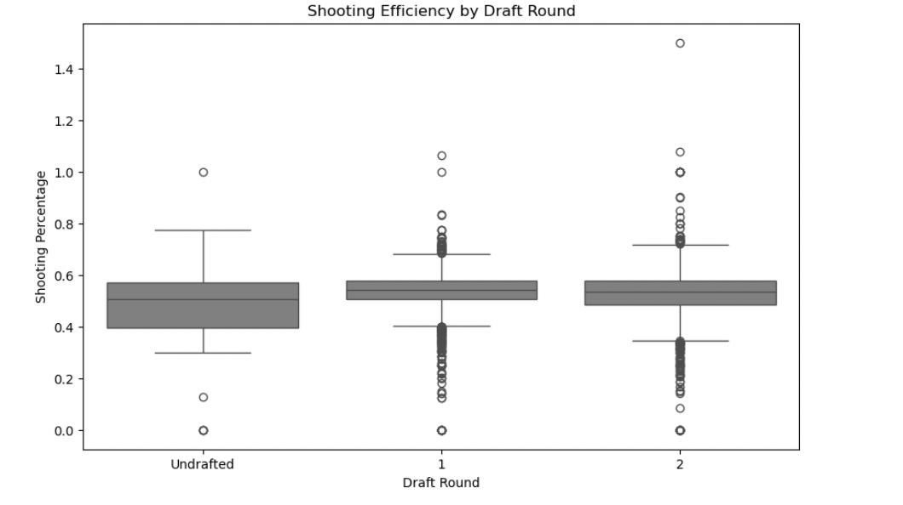

Understanding NBA player performance is essential for evaluating individual contributions and their overall impact on the game. This analysis uses statistical data from the official NBA website's leaderboard to explore key performance metrics such as points, assists, and rebounds. These statistics serve as critical indicators of player efficiency, influencing decisions made by fans, analysts, and team managers alike.
Analyzing player performance metrics provides valuable insights into a player's strengths and weaknesses, helping predict future performance and enabling data-driven decisions regarding player contracts, trades, and team compositions. As professional sports increasingly embrace analytics, particularly in leagues like the NBA, this project offers a deep dive into the world of sports analytics by examining player performance through quantitative metrics.
To learn more about NBA player statistics and performance analytics, visit the NBA's official website or explore studis like Skinner and Guy's A Method for Using Player Tracking Data in Basketball to Learn Player Skills and Predict Team Performance and Nguyen et al.'s The Application of Machine Learning and Deep Learning in Sport: Predicting NBA Players Performance and Popularity.
Our analysis makes use of a dataset from the NBA stats leaders, and it includes the top-performing players across various categories such as points per game, assists, rebounds, steals, and blocks starting from 2010 and after. This data contains roughly 450 records and includes around 22 key attributes. The attributes are listed in the following table:
| Variable Name | Details |
|---|---|
| player_name | Name of the player |
| team_abbreviation | Abbreviated name of the team the player played for (at the end of the season) |
| age | Age of the player |
| player_height | Height of the player (in centimeters) |
| player_weight | Weight of the player (in kilograms) |
| college | Name of the college the player attended |
| country | Name of the country the player was born in (not necessarily the nationality) |
| draft_year | The year the player was drafted |
| draft_round | The draft round the player was picked |
| draft_number | The number at which the player was picked in his draft round |
| gp | Games played throughout the season |
| pts | Average number of points scored |
| reb | Average number of rebounds grabbed |
| ast | Average number of assists distributed |
| net_rating | Team's point differential per 100 possessions while the player is on the court |
| oreb_pct | Percentage of available offensive rebounds the player grabbed while he was on the floor |
| dreb_pct | Percentage of available defensive rebounds the player grabbed while he was on the floor |
| usg_pct | Percentage of team plays used by the player while he was on the floor (FGA + Possession Ending FTA + TO) / POSS |
| ts_pct | Measure of the player's shooting efficiency that takes into account free throws, 2 and 3 point shots (PTS / (2*(FGA + FTA))) |
| ast_pct | Percentage of teammate field goals the player assisted while he was on the floor |
| season | NBA season |
The heatmap reveals significant relationships among key basketball metrics and draft-related attributes. Positive correlations, such as those between height and weight, and between offensive statistics like points per game, usage percentage, and true shooting percentage, show logical connections between a player’s physical attributes and their scoring contributions. Rebounding also correlates positively with height and weight, reflecting the advantage of size in rebounding effectiveness. Negative correlations, like the one between draft year and age, highlight the trend of younger players being drafted earlier. Metrics such as net rating exhibit weak correlations with most variables, indicating that individual player performance does not always align strongly with team success. Red colors signify strong positive relationships, while blue colors indicate negative correlations, ranging from 1 to -1 in strength.
This interactive chart allows users to select an NBA team from a dropdown menu to view its total points (Pts), rebounds (Reb), and assists (Ast) for a given season. By updating based on the selected team, the chart provides a clear breakdown of performance across these key metrics. It offers insights into a team’s strengths, such as whether they excel in scoring, rebounding, or facilitating play. Additionally, the chart can be used to compare teams, highlighting differences in play style and performance. For example, it may show if a team focuses more on offense (points), dominates defensively (rebounds), or emphasizes ball movement and teamwork (assists). This tool is useful for fans, analysts, and coaches seeking to understand team dynamics, identify patterns, and evaluate performance trends over multiple seasons.
This chart shows the shooting efficiency of players categorized by draft rounds...
The box plot highlights shooting efficiency (true shooting percentage) categorized by draft round, revealing trends in player performance based on draft position. Players selected in the first round display consistent shooting efficiency, with a narrow range and fewer outliers, indicating their reliability as scorers. Second-round picks, on the other hand, show greater variability, with some high-performing outliers suggesting potential undervaluation during the draft process. Undrafted players exhibit steady but slightly lower efficiency compared to first-round picks, showcasing their ability to contribute consistently despite not being selected. This chart illustrates the relationship between draft round and scoring efficiency, emphasizing how earlier draft picks tend to perform more reliably, while later picks and undrafted players demonstrate greater performance variability.
Understanding NBA player performance is essential for evaluating individual contributions and their overall impact on the game. This analysis uses statistical data from the official NBA website's leaderboard to explore key performance metrics such as points, assists, and rebounds. These statistics serve as critical indicators of player efficiency, influencing decisions made by fans, analysts, and team managers alike. In order to better evaluate the player stats, below are interactive charts that allow for user to select which team and player stats they want to see.